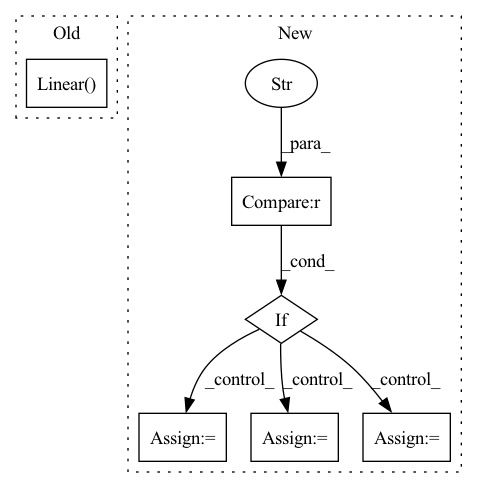

Pattern ID :763

Before Change
nn.ReLU(),
//nn.Linear(400, 200),
//nn.ReLU(),
nn.Linear(200, 200),
//nn.Dropout(p=0.5),
//nn.Linear(200, 100),
nn.ReLU(),
After Change
def __init__(self, number_of_labels, model_choice, embedding_size, dropout_layer, frozen):
super(CustomBERTModel, self).__init__()
if model_choice == "t5-3b":
tokenizer = T5Tokenizer.from_pretrained(model_choice, model_max_length=512)
model_encoding = T5EncoderModel.from_pretrained(model_choice)
embedding_size = 1024
self.encoderModel = model_encoding
else:
tokenizer = AutoTokenizer.from_pretrained(model_choice, model_max_length=512)
//attention_probs_dropout_prob=0.5)
//hidden_dropout_prob=0.5)
model_encoding = AutoModel.from_pretrained(model_choice)
embedding_size = 768
self.encoderModel = model_encoding
In pattern: SUPERPATTERN
Frequency: 3
Non-data size: 6
Instances
Fragment ID: 2543718
Project Name: allenai/embeddingrecycling
Commit Name: e8f2ce21388322a4ea20ce43cd214ed12c49e8fd
Time: 2022-03-15
Author: jonsaadfalcon@gmail.com
File Name: General_BiLSTM+LinearClassifer.py
M Class Name: CustomBERTModel
N Class Name: CustomBERTModel
M Method Name: __init__(6)
N Method Name: __init__(5)
M Parent Class: nn.Module
N Parent Class: nn.Module
M File Name: General_BiLSTM+LinearClassifer.py
N File Name: General_BiLSTM+LinearClassifer.py
M Start Line: 32
M End Line: 47
N Start Line: 30
N End Line: 62
'>
Before Change
io_size = ch * freqs
self.gru = nn.GRU(io_size, hidden_size, *args, **kwargs)
self.norm = nn.LayerNorm(hidden_size)
self.fc = nn.Linear(hidden_size, io_size)
def forward(self, x: Tensor, h: Optional[Tensor] = None) -> Tuple[Tensor, Tensor]:
GRU transposing [B, C, T, F] input shape to [B, T, C*F].
_, _, _, f = x.shape
After Change
super().__init__()
self.conv = Conv2dNormAct(in_ch, out_ch, kernel_size=kernel, fstride=fstride)
assert gru_mode in ("skip", "scale")
if gru_mode == "skip":
skip = nn.Identity
scale = None
else:
skip = None
scale = nn.Sigmoid
self.gru = GruSE(out_ch, gru_dim, groups=gru_groups, skip=skip, scale_activation=scale)
def forward(self, input: Tensor, h=None) -> Tuple[Tensor, Tensor]:
'>
Fragment ID: 2543702
Project Name: rikorose/deepfilternet
Commit Name: 29ca309dcc54dd9da42b84a8c2a658b009f143a1
Time: 2022-04-12
Author: h.schroeter@pm.me
File Name: DeepFilterNet/df/multistagenet.py
M Class Name: GruMlp
N Class Name: EncLayer
M Method Name: __init__(8)
N Method Name: __init__(4)
M Parent Class: nn.Module
N Parent Class: nn.Module
M File Name: DeepFilterNet/df/multistagenet.py
N File Name: DeepFilterNet/df/multistagenet.py
M Start Line: 250
M End Line: 256
N Start Line: 211
N End Line: 228
'>
Before Change
patch_dim = channels * patch_size * patch_size
self.to_patch_embedding = nn.Sequential(
Rearrange("b c (h p1) (w p2) -> b (h w) (p1 p2 c)", p1=patch_size, p2=patch_size),
nn.Linear(patch_dim, emb_dim),
)
//Embedding
self.cls_token = nn.Parameter(torch.randn(1, 1, emb_dim))
After Change
self.fusions = nn.ModuleList(self.fusions)
//Head
if type == "full":
self.head_depth = HeadDepth(resample_dim)
self.head_segmentation = HeadSeg(resample_dim, nclasses=nclasses)
elif type == "depth":
self.head_depth = HeadDepth(resample_dim)
self.head_segmentation = None
else:
self.head_depth = None
self.head_segmentation = HeadSeg(resample_dim, nclasses=nclasses)
def forward(self, img):
// x = self.to_patch_embedding(img)
'>
Fragment ID: 2543927
Project Name: antocad/focusondepth
Commit Name: 705d8789c4e66dbdbfdd3aeb7f20666f019481dd
Time: 2022-01-03
Author: antoine.cadiou@icloud.com
File Name: FOD/FocusOnDepth.py
M Class Name: FocusOnDepth
N Class Name: FocusOnDepth
M Method Name: __init__(14)
N Method Name: __init__(12)
M Parent Class: nn.Module
N Parent Class: nn.Module
M File Name: FOD/FocusOnDepth.py
N File Name: FOD/FocusOnDepth.py
M Start Line: 38
M End Line: 69
N Start Line: 25
N End Line: 81